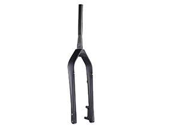

FK650B PLUS
| Model | FK650B PLUS |
|---|---|
| Material | Carbon Fiber |
| Feature | MTB Fork, 27.5" PLUS; OLD: 100mm; thru axle type 15mm |
| Headtube/ Crown | Tapered 1 1/8"- 1 1/2"/ 56mm |
| Weight | 630g +/- 30g |

FK10
| Model | FK10 |
|---|---|
| Material | Carbon Fiber |
| Feature | 26" Fat bike fork; OLD: 135mm or OLD: 150mm M15 thru axle dropout |
| Headtube/ Crown | 1 1/8"- 1 1/2" |
| Weight | 700g +/- 30g |
